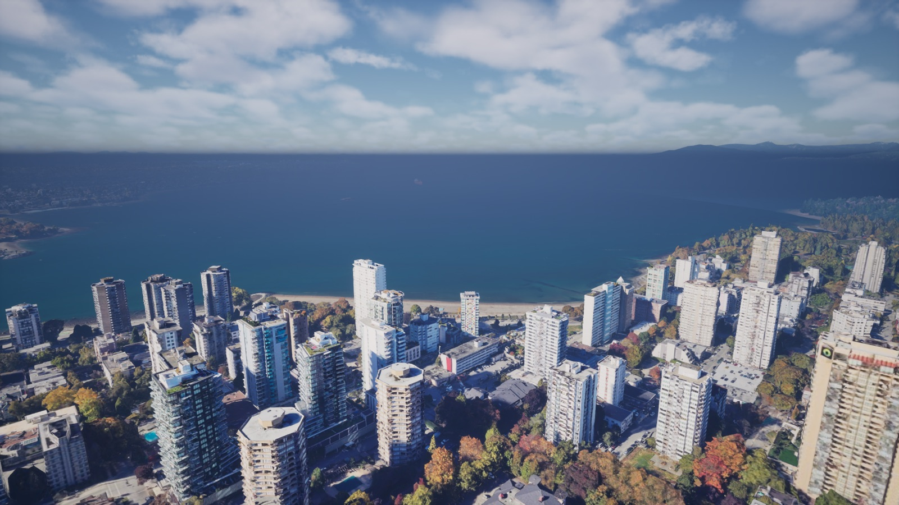
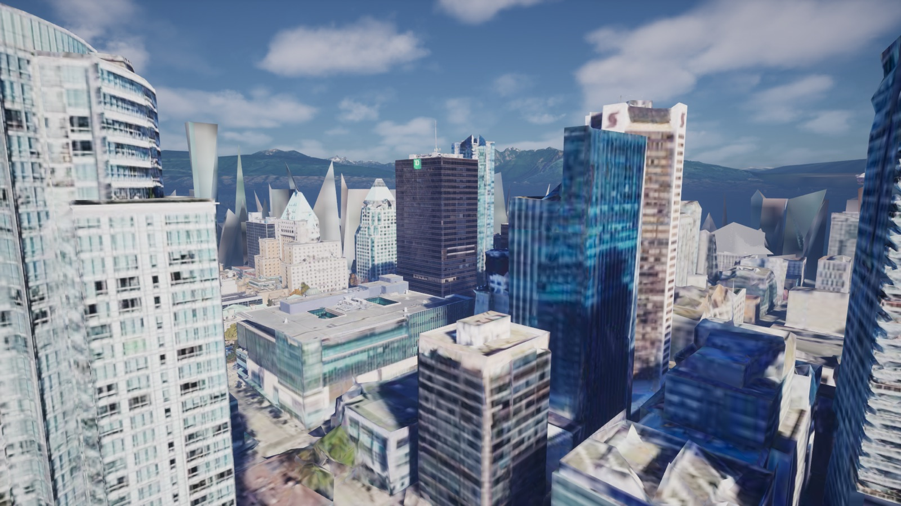

Vancouver Vice
A GTA-style crime game in the real Vancouver. Built in Unreal Engine 5 on Google's 3D scan of the city, with you in it from an iPhone face scan.
Play in your browser Download apps


The real city
Google's 3D scan of Vancouver, streamed live. You start outside the actual Apple Store on Georgia.
You, scanned in
An iPhone face scan becomes your character. Your face, your glasses, your clothes.
The story
Rob the Apple Store, jack a car, lose the cops, pawn the Mac minis. Then a crypto debt, a Lululemon stampede and a presale heist, with your family in it.
Where it's going
Now
The browser game plays today: real streets, cops, missions, three heroes, online with friends. The Unreal build runs on Mac.
Next
The first five minutes in Unreal, fully playable, then a Mac download.
Later
The whole story, guns, Windows, online heists.